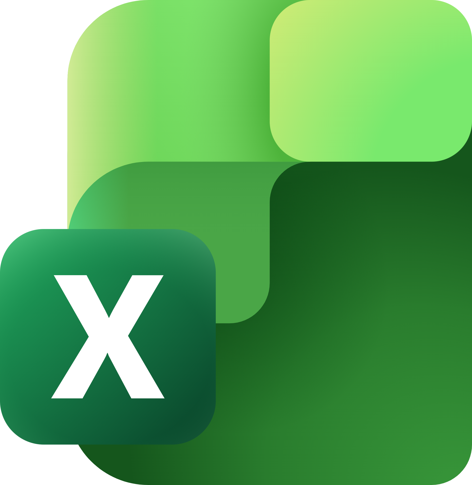
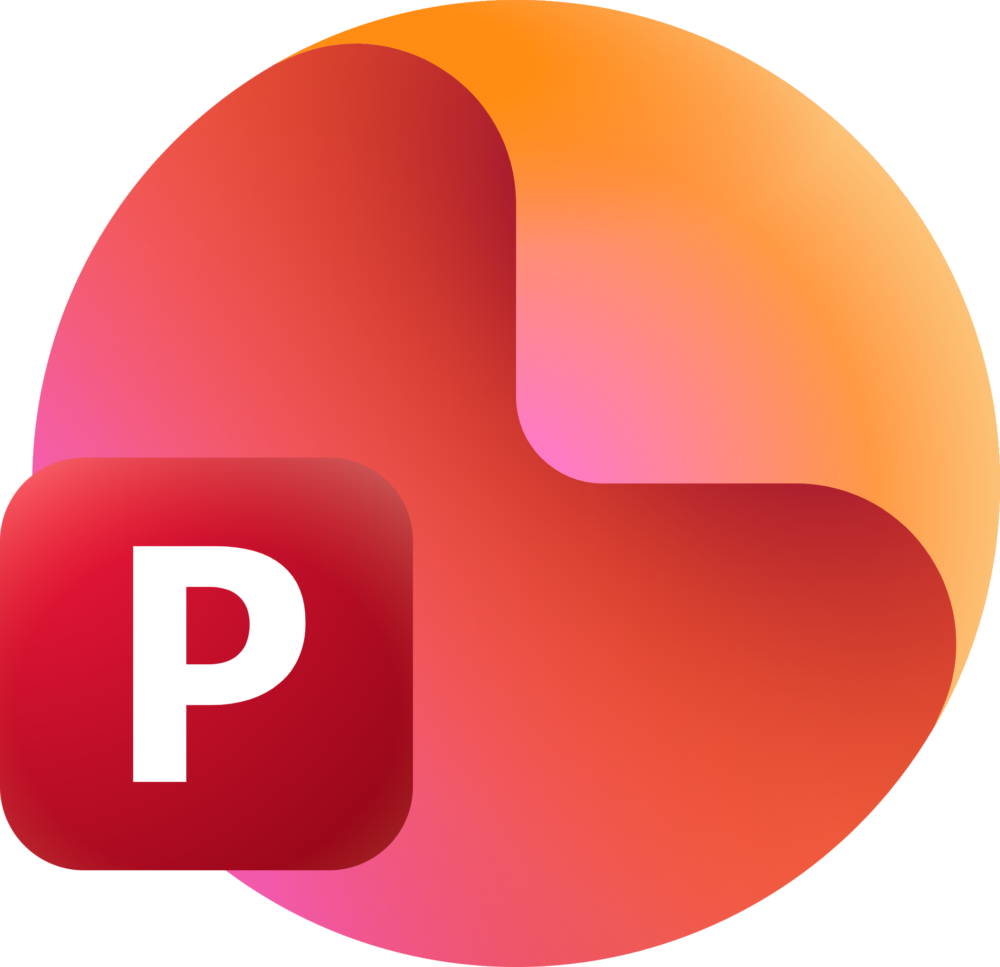
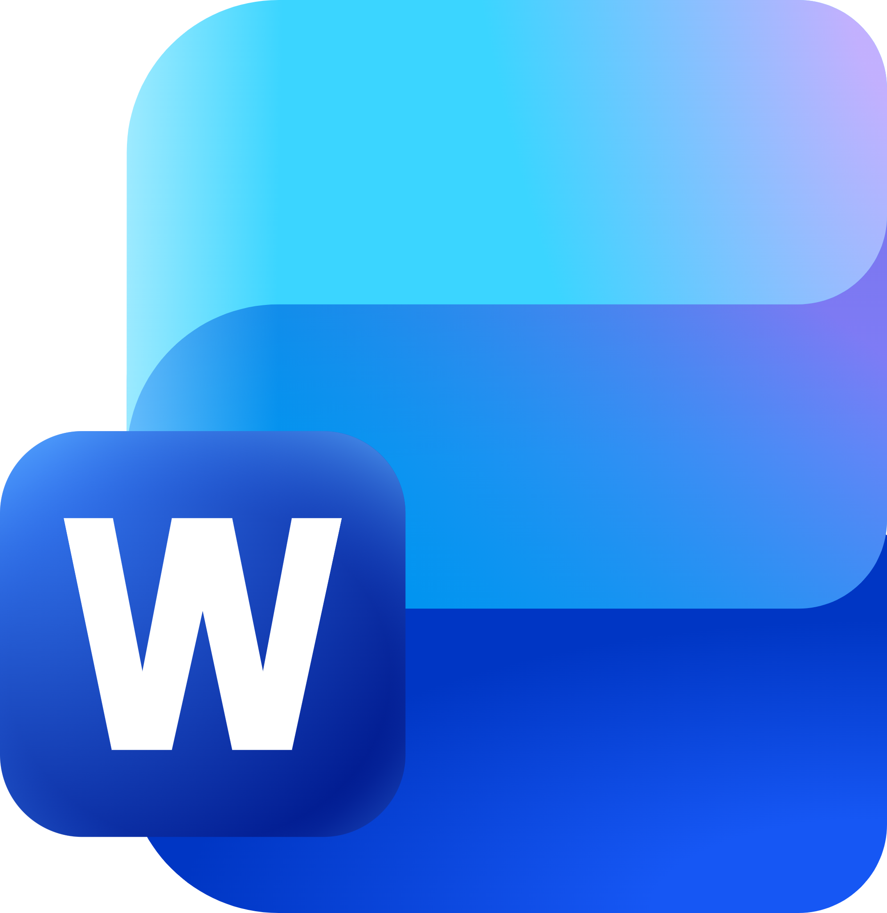
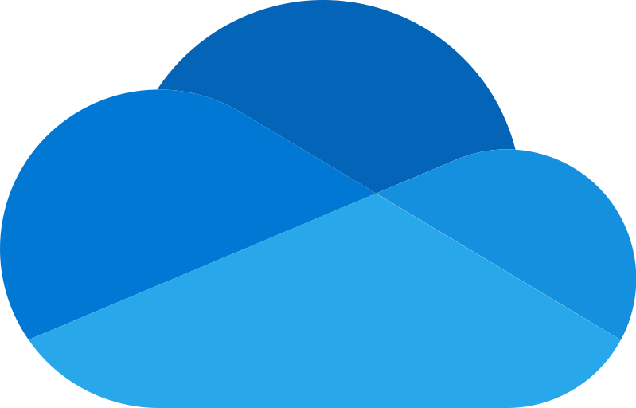
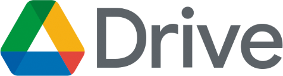
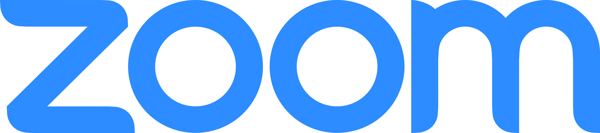
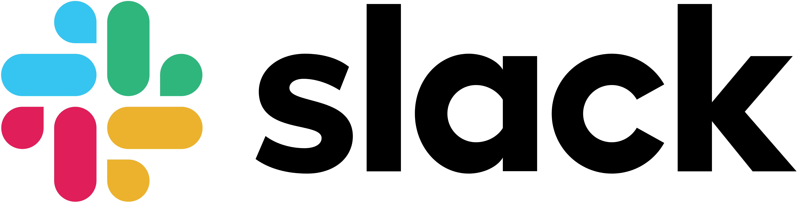
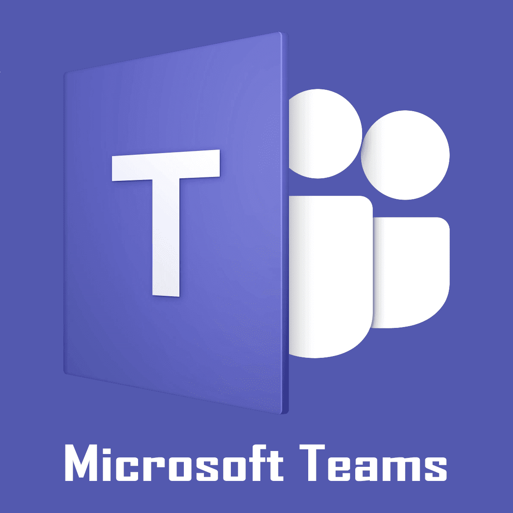

01 / Conception & ingénierie
Conception
 Autodesk Revit · BIM
Autodesk Revit · BIM AutoCAD · Plans 2D
AutoCAD · Plans 2D02 / Workflow & productivité
Productivité

Microsoft Excel
Microsoft PowerPoint
Microsoft Word
OneDrive
Google Drive03 / Communication & organisation
Collaboration

Zoom
Slack
Microsoft Teams